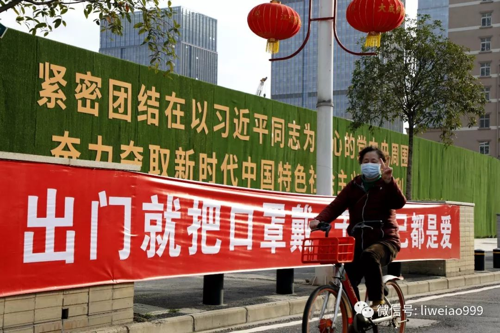
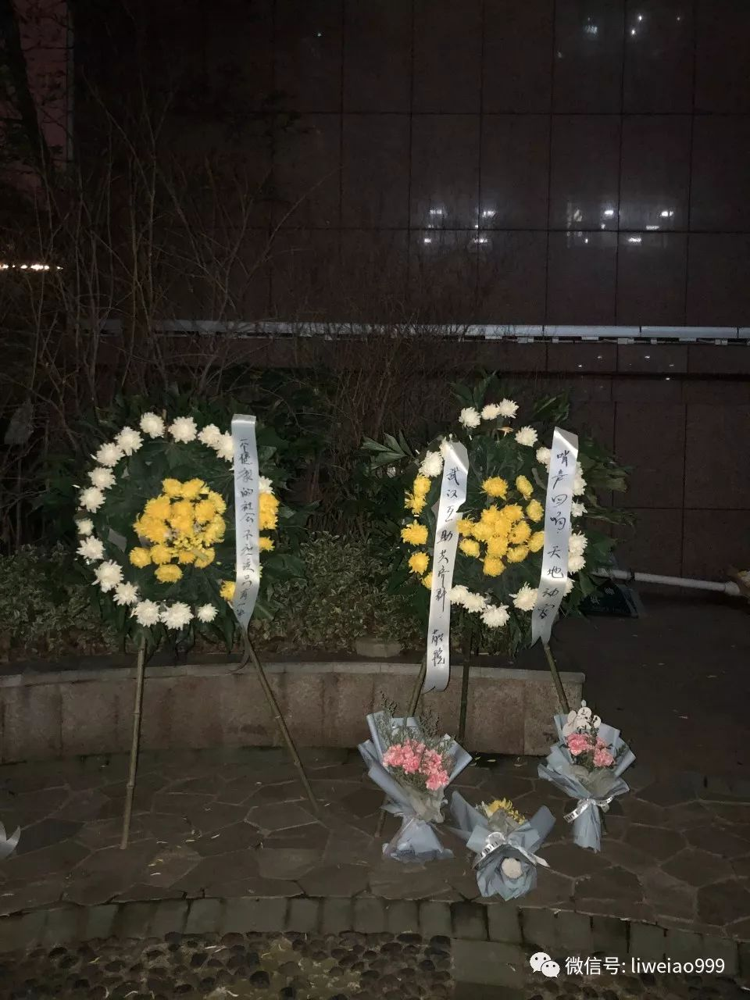
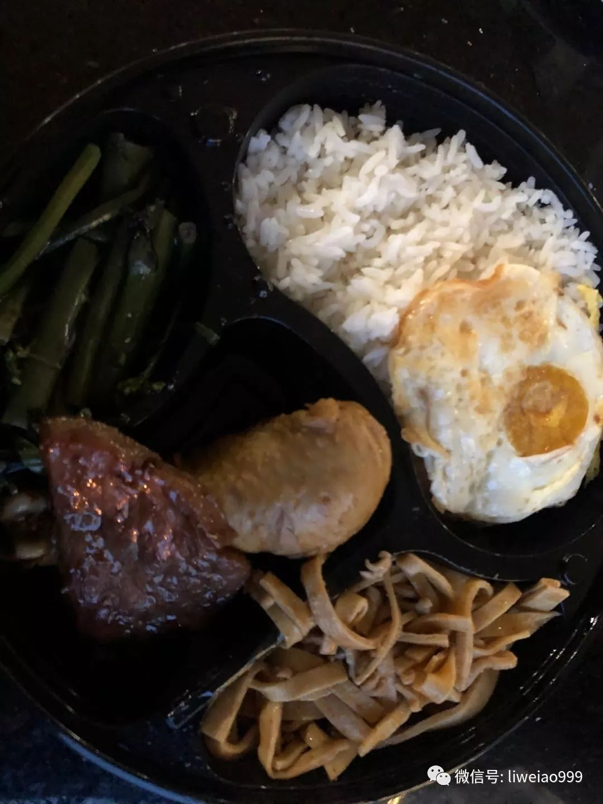
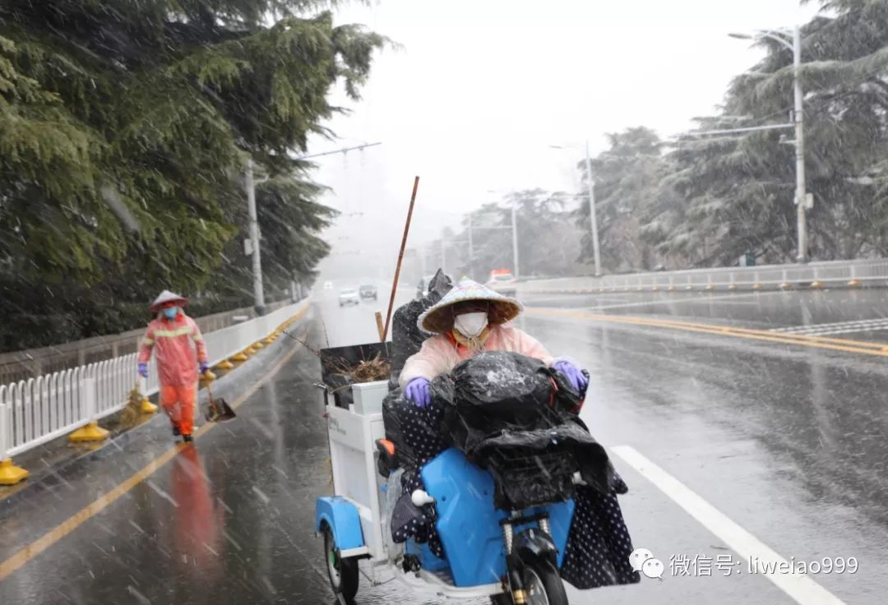
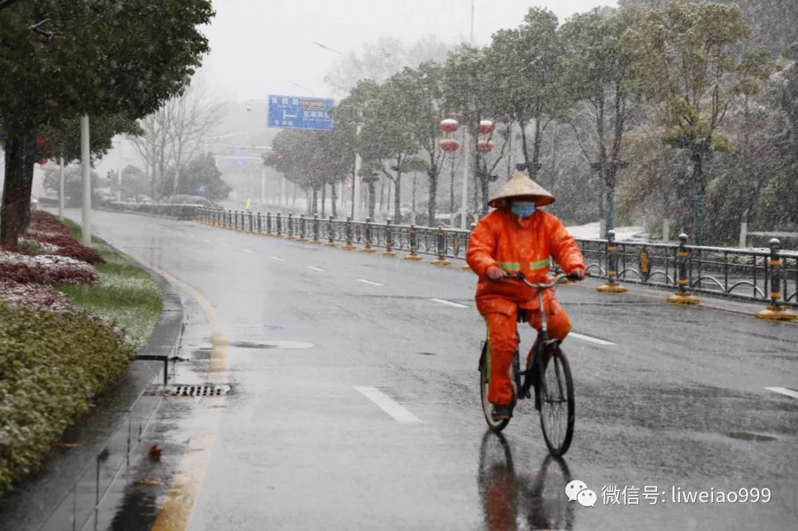
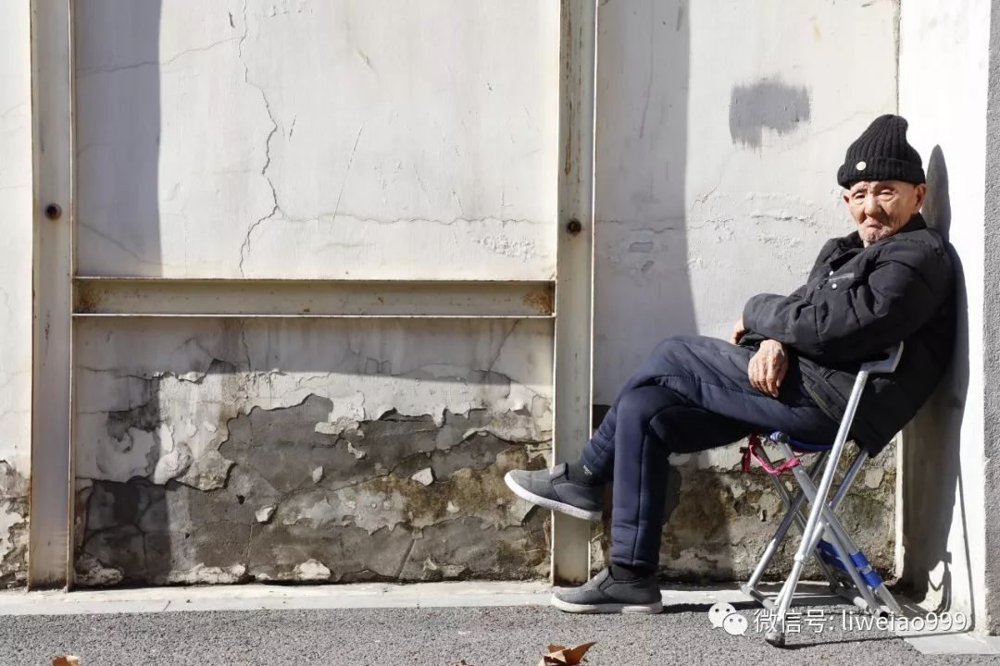
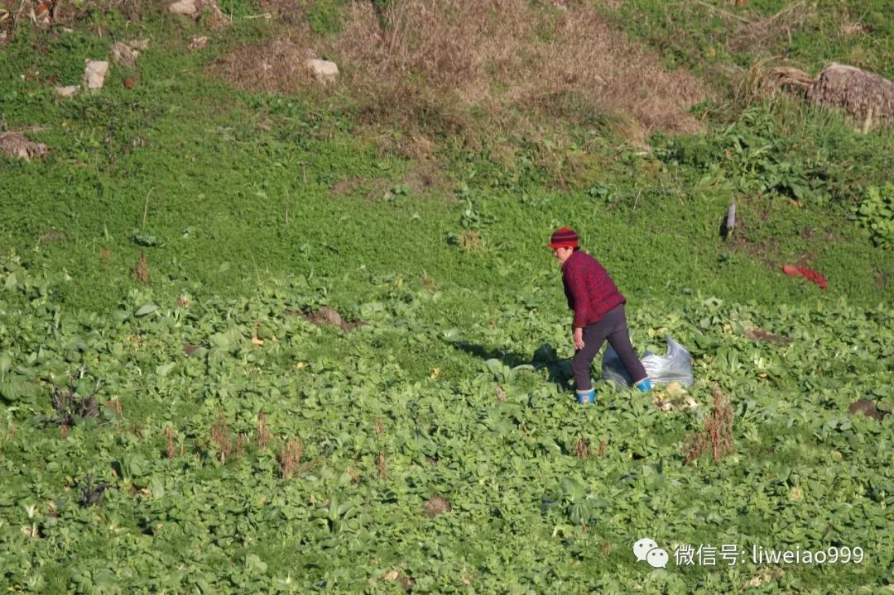
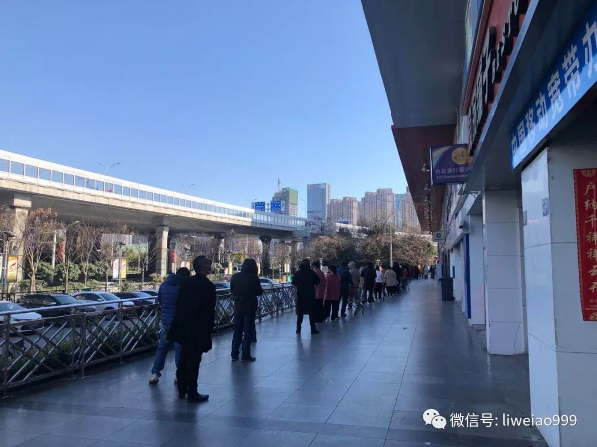
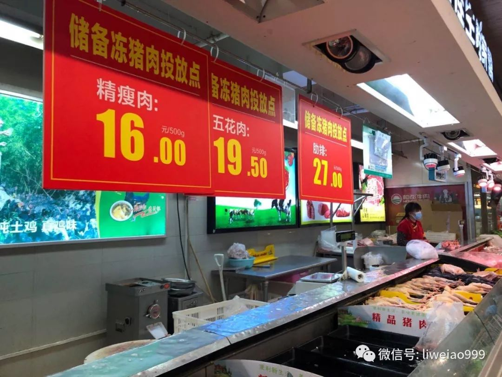

叶青武汉日记：最严格的“战时管理”来了！
原文链接 备份链接 岛语 非常时期，武汉成了全国人民挂念、祈福的城市。封城后，武汉人民的真实生活是什么样？ 武汉在发生哪些变化？ 正和岛自1月26日起特别推出“叶青专栏”。叶青是一位定居武汉40年的市民，也是一名学者和官员。在过往多期的专 …
相比不少同行，我这次来武汉很迟，但一眨眼间，到这会儿，也有十几天了。
这些天来，不少在湖北之外的朋友，总是问我，现在的武汉到底怎么样了？
如果说是医院，仅仅是在治疗的感染新冠肺炎的重症和危重症的病人，截至2月16日，武汉还有超过8000位，达到8056位。
如果看死者的情况，仅仅是官方数据：截至2月16日，武汉市已经有1309人因此病而去世。
同时，从2月11日至16日，这6天，武汉新增的死者人数分别是：72人、216人、88人、107人、110人、76人。
此外，我们从各种朋友的讲述里，从社交媒体上，也可以看到：官方数据之外，还有不少的“遗漏”……
街面上的情况如何呢？
这十几天来，我每天或早或晚，都会开车在武汉市内，转几个地方，超市，社区，当然也包括医院。
街面上，武汉很平静；并且，这几天来，明显感觉路上的车和人，一天比一天多，有时候等红灯时，一个路口竟有20来辆车在等着——这让我感到的是，高兴。
因为，渐渐地，武汉这座城市，多了一些烟火气。
我偷个懒，发一些从2月13日至17日，这5天里拍的图片吧。有的是拿相机拍的，有的就是手机。
2月13日
这天是晴天，我在中北路待了两三个小时，因为每次经过中北路，印象最深的，是这条街的各种标语非常多，有些的还写得不错。
我就很喜欢这条——“武汉人，不服输”！


我在这条标语前拍照时，一位骑单车路过的大姐，居然朝我比起了”V”的手势，很让我有些惊喜。
而且，这标语的背后，此前还另有标语……

下面这位是跑腿送外卖的小哥，没有“出镜”，他坐在这里晒着太阳，一边休息，一边等订单。
他说自己是荆州人，过年没有回老家，这一个多月来，一直在跑腿干活儿。多的时候，一天也有二三十单；有时候，一半也没有 ，“什么活儿都接，帮人买米买菜，跑腿的钱，看着给。”

这天也是李医生的头七，我又到了他去世前所在的医院，武汉市中心医院。
在他刚刚去世的那两三天，医院的这个小花坛曾经摆满了祭奠他的鲜花，13号这天，我只见到了两个花圈。
一个上面写着：“哨声回响，天地动容”。
另一个是：“一个健康的社会不应该只有一种声音”。
我相信，人们是没有忘记李医生的，更没有忘记他说的这句话……

从武汉市中心医院出来，在路边，有家麻辣烫开着门，也许只是送外卖而已吧，不过，麻辣烫的香味儿，弥漫在四周的空气里。吃了十几天的盒饭，我着实有些馋了……

2月14日
远东巷，是武汉的老街之一吧，这里的房子，相对都比较老旧。
这位老婆婆的背驼了，拄着拐棍，走得很慢，她是出来买菜的，塑料袋里装着几个土豆。
她也有个口罩，挂在下巴那里，但没有戴。
我问她多大年纪，她指着自己的耳朵说，听不见……

还是在这远东巷里，“鲜鱼糊汤粉”店开着门，我很好奇地往里看，哦，原来是这店主的孩子，在写作业。
我还没有吃过“鲜鱼糊汤粉”，等到疫情结束，再来武汉时，我要来这里吃上一碗。

晚上回到酒店，在餐厅领盒饭。酒店的几位年轻员工在“另起炉灶”，做铁板烧，有虾、有牛排。看到我经过，掌勺的年轻女孩跟我说，“来，给你加一块牛排”；我把饭盒递过去，他们又说了一句，“情人节快乐”！
哇，这个情人节的晚餐，真心不错：有鸡腿，鸡蛋，还有牛排。
谢谢你们，这些天一直在上班，给我们提供食宿和各种物资的你们。

2月15日
2月15日，武汉下雪了，而且，雪下得很大。
刚出门，我就发现这条路上多了几位交警。
一问，才知道有什么大人物经过，需要做安全保障。
等了几分钟，开过来七八辆小汽车，但不清楚里面坐的到底是何方神圣。
我忍不住嘀咕：
这都什么时候了，还要把普通的人民警察，往大雪里站……

除了警察，这大雪天里，也见到了至少十几位环卫工人，依然在路上工作着。

这一位，是骑着单车，连手套都没有戴……

这两位不知道是什么人，他们就缩在街头的屋檐下，躲着雪。

2月16日
2月16日，雪停了，天晴日朗。
在吉林街，老人们出来晒太阳了。

这一位，还有狗狗陪着他。

58街坊一带，这两天本来有不少人在这里卖菜和买菜。结果我到时，有家小店铺的老板说，这儿已经被举报了，政府来人把卖菜的给赶走了。

这一天里，在城郊，我还看到了在菜地里摘菜的人。
春天来了，蔬菜在疯长着……

傍晚回到酒店，湖边桥，出现了一位钓鱼人。
封城20多天了，正常人估计很难忍受一天到晚憋在家里的生活吧……
2月17日
看到新闻说，新任湖北省委书记应勇先生在2月15日，去了武汉的一家超市——武商量贩百圣店。不少朋友惊诧于那里的青椒，只卖1块钱/斤——怀疑是不是因为省委书记要来，“专门”设置在那里的。
于是，我决定这天去现场看看。
没想到，在超市门外，就排起了长队——这家超市每次只接待60个人，顾客走出来一位，才让进一位。
我认真计了下时间，从开始排队到进超市，我花了18分55秒……

之前的十几天里，我进了四五次大超市，一是自己买点东西，二来也是看看物资供应和物价情况。
与其他超市一样，这店里的便宜新鲜肉，早就卖空了。

但好的是，仍然有新鲜肉可买，虽然价格高了不少。
那一块钱一斤的青尖椒呢？
我找到了。
嘿，不但依然卖1块，而且货还真不少！
开车回酒店的路上，晚霞特别美，尤其是从武汉长江二桥上经过时。可惜，我没法停车，匆匆，就在路途中，闪了这一张……

天气预报，接下来两天，武汉仍然会是好天气。
祝福，这里的人们，心情也能轻松一些，愉悦一些。
虽然，我们知道，对于武汉，对于湖北，这一场战争，还需要比较久的时间……
长按二维码向我转账
敖虽资浅，愿为良记
受苹果公司新规定影响，微信 iOS 版的赞赏功能被关闭，可通过二维码转账支持公众号。
原文链接 备份链接 岛语 非常时期，武汉成了全国人民挂念、祈福的城市。封城后，武汉人民的真实生活是什么样？ 武汉在发生哪些变化？ 正和岛自1月26日起特别推出“叶青专栏”。叶青是一位定居武汉40年的市民，也是一名学者和官员。在过往多期的专 …
原文链接 备份链接 岛语 非常时期，武汉成了全国人民挂念、祈福的城市。封城后，武汉人民的真实生活是什么样？ 武汉在发生哪些变化？ 正和岛自1月26日起特别推出“叶青专栏”。叶青是一位定居武汉40年的市民，也是一名学者和官员。在过往多期的专 …
原文链接 备份链接 作者 | 第一财经 吴绵强 周芳 陈益刊 编辑 | 张富贵 为了遏制新型冠状病毒感染的肺炎扩散，按照武汉市新型冠状病毒感染的肺炎疫情防控指挥部通告，自1月23日10时起，武汉全市城市公交、地铁、轮渡、长途客运暂停运营； …
原文链接 备份链接 【财新网】（记者 张子竹）武汉新冠肺炎疫情蔓延近两个月，公共应急事件中如何让信息更透明？武汉大学教授尚重生认为，“我觉得我们只要能够更尊重常识，可能就会有一个很大的进步”。 今年59岁的尚重生为武汉大学城市安全与社会管 …
原文链接 备份链接 我们该从疫情中获取怎样的“抗体”和“免疫力”？1月29日，大年初五，在武汉市汉口解放大道，一位被确诊新冠肺炎的患者正在转院。摄影/长江日报 金思柳 疫情“罗生门”：患者、医者、决策者 《中国慈善家》记者/温如军 吴可 …